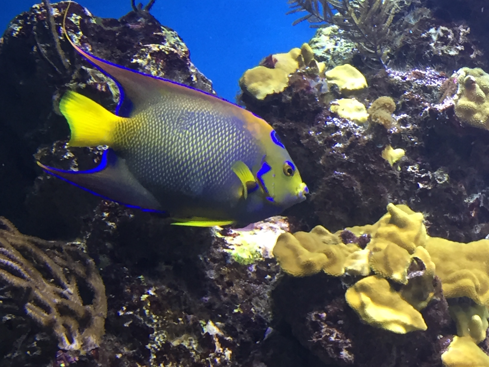

About Me
I am Neha. I am currently enrolled in SMU Coding bootcamp to learn coding and be certified as a full stack Engineer.
I like to learn new things, and the main reason I have joined this program is for better career propects.
Learning to code helps in coming up with better Business requirments and better understand Products.Currently I work as a Project manager managing projects belonging to the digital portfolio but i am looking for better career prospects as technical PM or a Product owner as I like to research about new digital projects and features. I am also passionate about finding and resolving bugs.